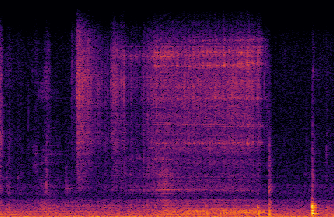

Audio classification of the content of food containers and drinking glasses
Food containers, drinking glasses and cups handled by a person generate sounds that vary with the type and amount of their content. In this paper, we propose a new model for sound-based classification of the type and amount of content in a container. The proposed model is based on the decomposition of the problem into two steps, namely action recognition and content classification. We consider the scenario of the recent CORSMAL Containers Manipulation dataset and consider two actions (shaking and pouring), and seven material and filling level combinations. The first step identifies the action a person performs while manipulating a container. The second step is an appropriate classifier trained for the specific interaction identified by the first step to classify the amount and type of content.
Experiments show that the proposed model achieves 76.02, 78.24, and 41.89 weighted average F1 score on the three test sets, respectively, and outperforms baselines and existing approaches that classify either independently content level and content type or directly the combination of content type and level together.

|
||
|  |
Related material
Pre-print (arXiv)
Audio classification of the content of food containers and drinking glasses
S. Donaher, A. Xompero, and A. Cavallaro
European Signal Processing Conference (EUSIPCO), Virtual, 23-27 August 2021.
Sponsors


Partners